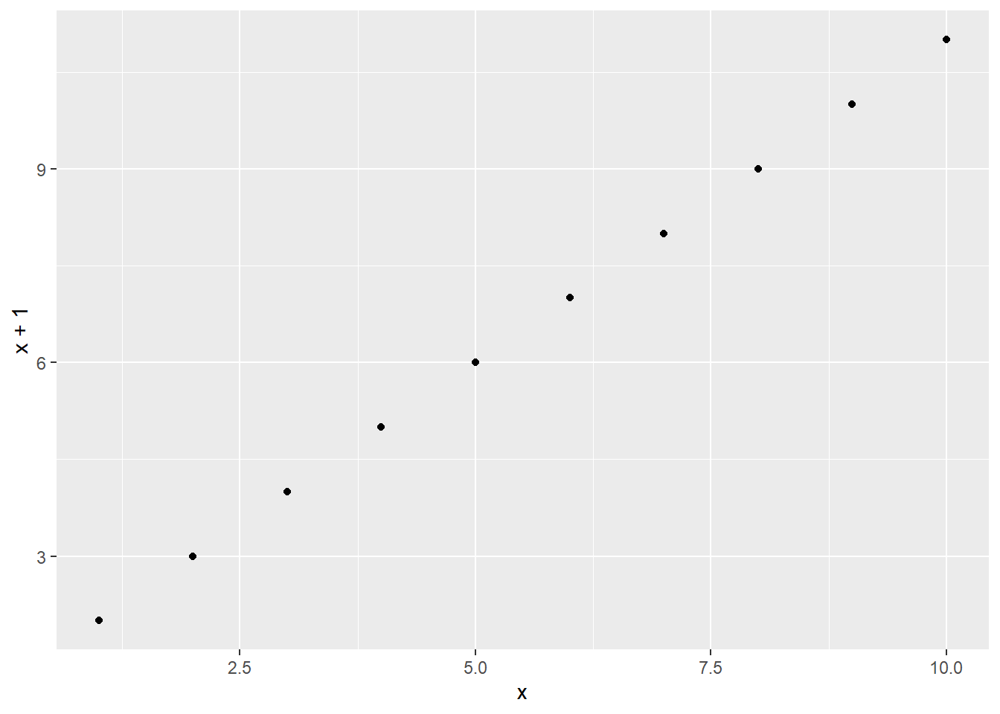
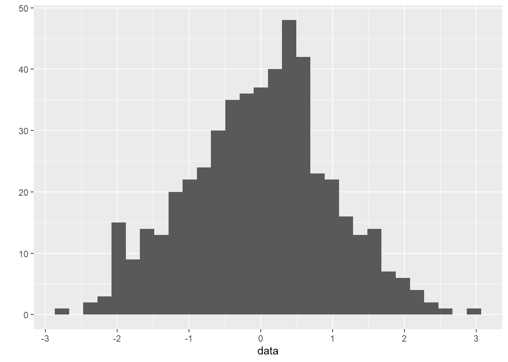
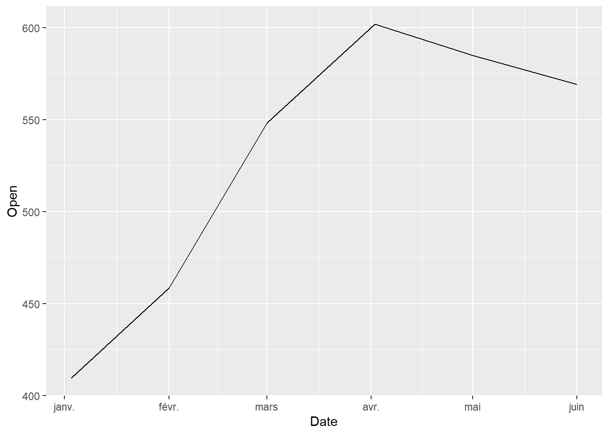
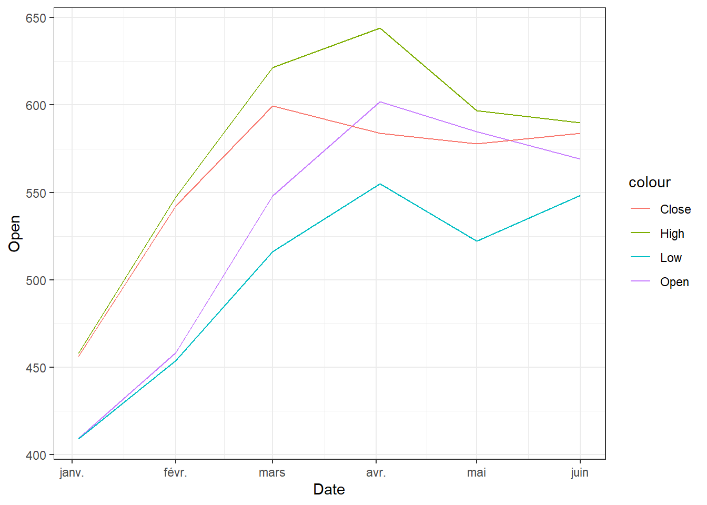
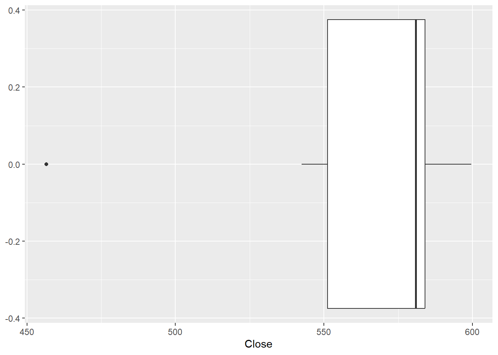
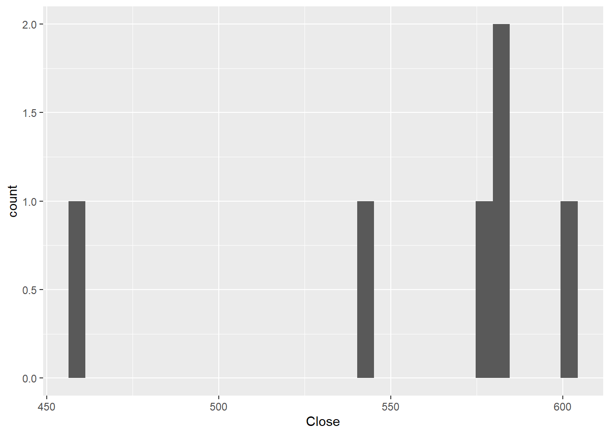
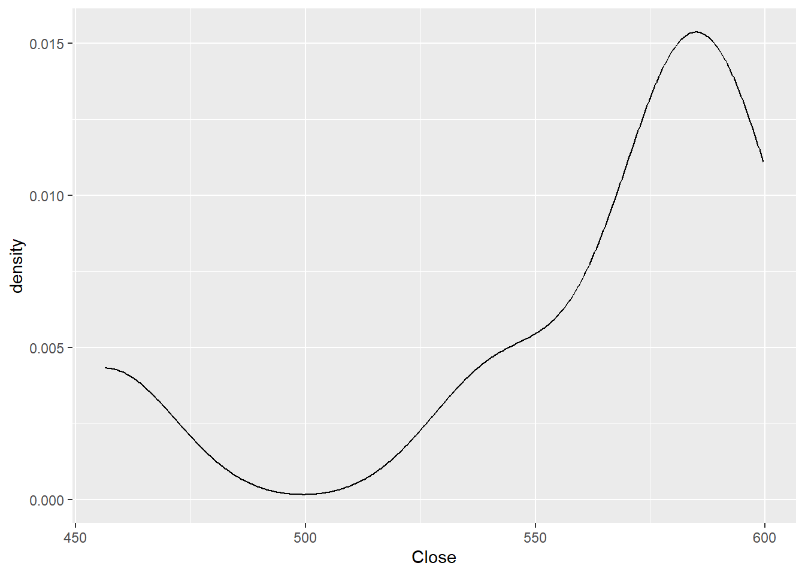

# Make "Hello World!" appear to the console
print("Hello World!") [1] "Hello World!""Hello World!" # Just the text[1] "Hello World!"This notebook is for students who are not familiar with R language.
Note that many more resources are available on the Web. Check out this website for more: https://www.w3schools.com/r/default.asp
R can be used in different text editors, here are from the most preferred to the least preferred:
Rstudio
Positron
Visual Studio Code
Jupyter lab/notebook
Sublime text /Atom
Neovim (only if you are experimented)
R can be run in the following documents:
Rscripts (.r)
Rmarkdown notebook (.rmd)
Quarto notebook (.qmd)
Jupyter notebook (.ipynb)
Run a line (in a script or notebook) using Ctrl/Cmd+Enter and run code cells (in a notebook) by using Ctrl/Cmd+Shift+Enter or pressing the “Play” button in the toolbar above on the “Run button” or on the cell.
To print out results, simply write print() with parentheses, but it is not compulsory in R to output a result.
# Make "Hello World!" appear to the console
print("Hello World!") [1] "Hello World!""Hello World!" # Just the text[1] "Hello World!"Line 1: In R, comments begin with a #. This statement is ignored by the interpreter and serves as documentation for our code. The short cut for this is Ctrl+Maj+C or Cmd+Maj+C.
Line 2: print(“Hello World!”) To print something on the console, print() function is used. This function also adds a newline after our message is printed (unlike in C). Note that in R you can also use the cat() function for a more readable version:
print("Hello\nWorld") # print as it is[1] "Hello\nWorld"cat("Hello\nWorld!") # print a readable versionHello
World!Note: To see the document related to the function or library in:
RStudio: appears automatically
VScode: appears automatically or Ctrl+Space or hover the function
Jupyter lab/notebook: Shift+Tab.
Curly brackets: Like many programming languages, R does not care about the spaces because it is always bound to brackets (parentheses, brackets or curly brackets). Indentation is only for aesthetic matter and users are free to indent their code following their taste (unlike Python or Nim that can have an indentation error). For example, the indentation of the second print() does not break the code since it is in the brackets:
if (3==3){
print("TRUE")
} else {
print("FALSE")
}[1] "TRUE"Rstudio:
Jupyter lab/notebook:
Indexing in R starts at 1, which means that the first element in a sequence has an index of 1, the second element has an index of 2, and so on as expected.
# Vector
number_vector = c(1, 2, 3, 4, 5)
# List
number_list = list(1, 2, 3, 4, 5)
# Vector's first element
number_vector[1][1] 1# List's first element
number_list[[1]][1] 1Note: You need a double bracket to have access to a list element (see last lines of code).
Tips: You can generate a continuous vector between two values using the sign : as follows:
1:10 # 1 to 10 [1] 1 2 3 4 5 6 7 8 9 103:-8 # 3 to -8 [1] 3 2 1 0 -1 -2 -3 -4 -5 -6 -7 -8You can also decide to use specific steps to get from one value to another using the seq() function:
seq(0, 10, 2) # From 0 to 10 by steps of 2[1] 0 2 4 6 8 10seq(-5, 5, 5) # From-5 to 5 by steps of 5[1] -5 0 5R reserved words
R has reserved words that you can use as a variable name (except if you surround it by `). Otherwise, R is smart enough to know which element you are talking about even though, function, package and variable names have the same name.
# if, else, repeat, while, function, for, in, next, breaks, TRUE, FALSE, NULL, Inf, NA, NaNVariable names in R can contain alphanumerical characters a-z, A-Z, 0-9 and some special characters such as _ and .. Variable names cannot start with a number (e.g., 22list), or cannot be R reserved words (see above), or cannot contain a space or -. If your variable does not respect this rule, you can always surround it with ` and it will works.
Variables can contain different forms such as character (text), integer, or double (float). The variable can contain mix of these different forms.
The assignment operators in R are <-, -> and =. R is a dynamically typed language, so we do not need to specify the type of a variable when we create one!
Assigning a value to a new variable already creates the variable:
# variable assignments
x = 1.0
y <- 2
3L -> z # 3L is an integerIn the last line, we force the creation of integer by adding L after a number.
Since value were assigned, the result does not appears. to see it you can just call the variable:
x[1] 1y[1] 2z[1] 3You can also have many of them in a single line using ; to separate them.
x; y; z[1] 1[1] 2[1] 3Although not explicitly specified, a variable do have a type associated with it. The type is derived from the value it was assigned.
typeof(x) # double[1] "double"typeof(y) # double[1] "double"typeof(z) # integer[1] "integer"If we assign a new value to a variable, its type can change.
x = "cat"
typeof(x)[1] "character"Note: Integer: represents positive or negative whole numbers like 3 or -512. Floating point number (double): represents real numbers like 3.14159 or -2.5. Character string: text.
If we try to use a variable that has not yet been defined we get an Error:
hBut we can assign the value to a new variable from an existing variable:
h <- x
h[1] "cat"Most operators and comparisons in R work as one would expect:
+, -, *, /, %/% (integer division), ^ power1 + 2 # Addition[1] 31 - 2 # Substraction[1] -11 * 2 # Multiplication[1] 21 %/% 2 # Modulo[1] 01.0 + 2.0[1] 31.0 - 2.0[1] -11.0 * 2.0[1] 21.0 %/% 2.0[1] 0# Integer division of float numbers
3.0 %/% 2.0[1] 13^2 # 3 power of 2[1] 9TRUE[1] TRUEFALSE[1] FALSE& (and), ! (not) and | (or).TRUE & FALSE # FALSE win[1] FALSE!FALSE # Inverse[1] TRUETRUE | FALSE # TRUE win[1] TRUE>, <, >= (greater or equal), <= (less or equal), == equality.2>1 # Is 2 bigger than 1?[1] TRUE2<1 # Is 2 smaller than 1?[1] FALSE2>2 # Is 2 bigger than 2?[1] FALSE2<2 # Is 2 smaller than 2?[1] FALSE2>=2 # Is 2 bigger than or equal 2?[1] TRUE2<=2 # Is 2 smaller than or equal to 2?[1] TRUENote:
and (&): means that both condition most be true to return TRUE
or (|): means that least one condition need to be true tu return TRUE
2>1 & 3>4 # is 2 bigger than 1 AND 3 bigger than 4?[1] FALSE2>1 | 3>4 # is 2 bigger than 1 OR 3 bigger than 4?[1] TRUEIt works with vectors:
c(0, 5, 10, 15) > 2[1] FALSE TRUE TRUE TRUESo it is possible to filter vectors
vector_to_filter <- c(3, 6, 9, 12)
vector_to_filter[vector_to_filter > 5] # Keep all the value bigger than 5[1] 6 9 12There are other
# equality
setequal(c(1,2,3), c(3,4,5))[1] FALSE# are the elements in the left in the vector on the right?
c(1,2,3) %in% c(3,4,5)[1] FALSE FALSE TRUEStrings are the variable type that is used for storing text messages. To declare string variables, include quotes; either single or double. E.g:
s = "Hello world"
typeof(s)[1] "character"In R, characters are one element of a vector. To collect the length of a character, we need to use a specific function (since length() only return on 1 for characters).
# classic lenght
nchar(s)[1] 11# print the length of a string (i.e. the number of characters)
length(s)[1] 1# replace a substring in a string with somethign else
s2 = gsub(s, "world", "test")
s2[1] "test"We can index a character in a string using [] after the function strsplit(character, "")[[1]][1]:
s3 = strsplit(s, "")[[1]]
s3 [1] "H" "e" "l" "l" "o" " " "w" "o" "r" "l" "d"s3[1][1] "H"Note that in R head() allows to do an ordered selection (like []) while tail() do the same backwards.
head(s3, 3)[1] "H" "e" "l"tail(s3, 1)[1] "d"We can extract a part of a string using the syntax [start:stop], which extracts characters between index start and stop:
s3[2:4][1] "e" "l" "l"Lists are very similar to vector, except that each element can be of any type.
The syntax for creating lists in R is list(...):
string_list = list('spring', 'summer', 'winter', 'fall')
string_list[[1]]
[1] "spring"
[[2]]
[1] "summer"
[[3]]
[1] "winter"
[[4]]
[1] "fall"integer_list = list(12, 3, 5, 3, 9, 6, 2)
integer_list[[1]]
[1] 12
[[2]]
[1] 3
[[3]]
[1] 5
[[4]]
[1] 3
[[5]]
[1] 9
[[6]]
[1] 6
[[7]]
[1] 2float_list = list(2.3, 4.6, 3.7, 8.3)
float_list[[1]]
[1] 2.3
[[2]]
[1] 4.6
[[3]]
[1] 3.7
[[4]]
[1] 8.3To access variables in a list:
string_list <- list("a", "b", "c", "d")
string_list[[1]] # note that indexing starts at 1 in R![1] "a"# create a new empty list
l <- list()
# add elements using `append`
l <- append(l, "A")
l <- append(l, "d")
l[[1]]
[1] "A"
[[2]]
[1] "d"We can modify lists by assigning new values to elements in the list. In technical jargon, lists are mutable.
l[[2]] <- "p"
l[[1]]
[1] "A"
[[2]]
[1] "p"We can insert an element at a specific index using append
l <- append(l, "i", 0)
l <- append(l, "n", 1)
l <- append(l, "s", 2)
l <- append(l, "e", 3)
l <- append(l, "r", 4)
l <- append(l, "t", 5)
l[[1]]
[1] "i"
[[2]]
[1] "n"
[[3]]
[1] "s"
[[4]]
[1] "e"
[[5]]
[1] "r"
[[6]]
[1] "t"
[[7]]
[1] "A"
[[8]]
[1] "p"Remove elements with remove
l <- l[l != "A"]
l[[1]]
[1] "i"
[[2]]
[1] "n"
[[3]]
[1] "s"
[[4]]
[1] "e"
[[5]]
[1] "r"
[[6]]
[1] "t"
[[7]]
[1] "p"Lists are not the best method for quick and concise calculations or operations. Vectors are more appropriate. This is because vectors always have the same type, so calculations are easier for the computer (which can anticipate all the steps and therefore optimize). Lists come in handy when we want to have a collection of elements that have different types and names.
List are also like vectors, except that each element is a key-value pair. The syntax for lists is list(key1 = value1, ...).
student <- list(hair = c("brown", "pink"),
eye = "black",
height = 172)
class(student)[1] "list"student$hair
[1] "brown" "pink"
$eye
[1] "black"
$height
[1] 172To access keys:
names(student)[1] "hair" "eye" "height"To access values of the keys:
unlist(student) hair1 hair2 eye height
"brown" "pink" "black" "172" To access an item of a key:
student$eye[1] "black"# or
student[["eye"]][1] "black"To change the value of a key:
student$eye <- 'blue'
# or
student[["eye"]][1] "blue"To add a new entry:
student$nationality <- 'Spanish'
# or
student[["nationality"]] <- 'Spanish'student$hair
[1] "brown" "pink"
$eye
[1] "blue"
$height
[1] 172
$nationality
[1] "Spanish"You can take an user input using using the readline() function. Not that if you are using it in a chunk you still have to interact with the code in the console:
# Input
name <- readline(prompt="What is your name: ")
paste("My name is", name)You can execute your code conditionally by dividing it into different parts and setting conditions for running each specific part.
The R syntax for conditional execution of code use the keywords if, else if, else:
statement1 and statement2 by TRUE or FALSEstatement1 <- FALSE
statement2 <- FALSE
if (statement1) { # "if statement1 is TRUE" do the following:
"statement1 is TRUE"
} else if (statement2) { # "otherwise if statement2 is TRUE" do the following:"
"statement2 is TRUE"
} else { # "therwise do the following:"
"statement1 and statement2 are FALSE"
}[1] "statement1 and statement2 are FALSE"In R, loops can be programmed in a number of different ways. The most common is the for loop, which is used together with iterable objects, such as lists. The basic syntax is:
for loops:for (x in 1:3) {# for each element of the list print it
print(x)
}[1] 1
[1] 2
[1] 3Note that in this case, the function print() is necessary.
To iterate over key-value pairs of a list:
for (key in names(student)) { # for each key of the list print "[key] = [value]"
print(paste(key, "=", student[[key]]))
}[1] "hair = brown" "hair = pink"
[1] "eye = blue"
[1] "height = 172"
[1] "nationality = Spanish"while loops:Instead of passing each element of a list, it is possible to set the condition that a code is executed as long as a specific condition is met. You can run the whole chunk to see it in action:
i <- 0
while (i < 5) { # "while i is smaller than 5 run the following code:"
print(i)
i <- i + 1
}[1] 0
[1] 1
[1] 2
[1] 3
[1] 4"done" # Appears if done[1] "done"Note that the print("done") statement is not part of the while loop body because of the difference in indentation.
# example of for loop and if statement:
# for each value in the list "integer_list" print a value that is greater or equal to 7
integer_list <- c(5, 7, 9, 3, 8)
for (x in integer_list) {
if (x >= 7) {
print(x)
}
}[1] 7
[1] 9
[1] 8A function in R is defined using the keyword function, followed by a function name, a signature within parentheses (), and a curly brace {. The following code, with one additional level of indentation, is the function body. It return nothing but the function is available now.
square <- function(x) { # for a given value x do the following:
return(x^2) # Return the square of x.
}You can use your new function on any value:
square(4)[1] 16square(10)[1] 100Note that you are not forced to use the return statement in the function, R will return the last value automatically:
square <- function(x) { # for a given value x do the following:
x^2 # Return the square of x.
}
square(4)[1] 16You can even make it shorter by removing the brackets and putting everything in a single line:
square <- function(x) x^2
square(4)[1] 16Most of the functionality in R is provided by packages. The R Standard Library is a large collection of packages that provides cross-platform implementations of common facilities such as access to the operating system, file I/O, string management, network communication, and much more.
To use a package in an R program it first has to be installed. A quickest way is to do it here using the install.packages statement. For example, to install the package ggplot2, which is a useful package for plots, we can do:
install.packages("ggplot2")To use a package in an R program it first has to be imported. A package can be imported using the library statement. For example, to import the package ggplot2, which contains many standard plotting functions, we can do:
library(ggplot2)Warning: le package 'ggplot2' a été compilé avec la version R 4.2.3This includes the whole package and makes it available for use later in the program.
Note that R can creat plot without packages. But ggplot2 bring beautiful and modular graphs. Let’s try it! For instance, R have built-in datasets that we can use. For instance we can invoke the cars dataset by simply calling it if it is for a short usecase:
cars speed dist
1 4 2
2 4 10
3 7 4
4 7 22
5 8 16
6 9 10
7 10 18
8 10 26
9 10 34
10 11 17
11 11 28
12 12 14
13 12 20
14 12 24
15 12 28
16 13 26
17 13 34
18 13 34
19 13 46
20 14 26
21 14 36
22 14 60
23 14 80
24 15 20
25 15 26
26 15 54
27 16 32
28 16 40
29 17 32
30 17 40
31 17 50
32 18 42
33 18 56
34 18 76
35 18 84
36 19 36
37 19 46
38 19 68
39 20 32
40 20 48
41 20 52
42 20 56
43 20 64
44 22 66
45 23 54
46 24 70
47 24 92
48 24 93
49 24 120
50 25 85Then we can then plot it using the plot() function:
plot(cars)
ggplot allow to do the same:
qplot(speed, dist, data = cars)Warning: `qplot()` was deprecated in ggplot2 3.4.0.
Once a package is imported, we can list the symbols it provides using the ls function:
ls("package:ggplot2") [1] "%+%" "%+replace%"
[3] "aes" "aes_"
[5] "aes_all" "aes_auto"
[7] "aes_q" "aes_string"
[9] "after_scale" "after_stat"
[11] "alpha" "annotate"
[13] "annotation_custom" "annotation_logticks"
[15] "annotation_map" "annotation_raster"
[17] "arrow" "as_label"
[19] "as_labeller" "autolayer"
[21] "autoplot" "AxisSecondary"
[23] "benchplot" "binned_scale"
[25] "borders" "calc_element"
[27] "check_device" "combine_vars"
[29] "continuous_scale" "Coord"
[31] "coord_cartesian" "coord_equal"
[33] "coord_fixed" "coord_flip"
[35] "coord_map" "coord_munch"
[37] "coord_polar" "coord_quickmap"
[39] "coord_radial" "coord_sf"
[41] "coord_trans" "CoordCartesian"
[43] "CoordFixed" "CoordFlip"
[45] "CoordMap" "CoordPolar"
[47] "CoordQuickmap" "CoordRadial"
[49] "CoordSf" "CoordTrans"
[51] "cut_interval" "cut_number"
[53] "cut_width" "datetime_scale"
[55] "derive" "diamonds"
[57] "discrete_scale" "draw_key_abline"
[59] "draw_key_blank" "draw_key_boxplot"
[61] "draw_key_crossbar" "draw_key_dotplot"
[63] "draw_key_label" "draw_key_linerange"
[65] "draw_key_path" "draw_key_point"
[67] "draw_key_pointrange" "draw_key_polygon"
[69] "draw_key_rect" "draw_key_smooth"
[71] "draw_key_text" "draw_key_timeseries"
[73] "draw_key_vline" "draw_key_vpath"
[75] "dup_axis" "economics"
[77] "economics_long" "el_def"
[79] "element_blank" "element_grob"
[81] "element_line" "element_rect"
[83] "element_render" "element_text"
[85] "enexpr" "enexprs"
[87] "enquo" "enquos"
[89] "ensym" "ensyms"
[91] "expand_limits" "expand_scale"
[93] "expansion" "expr"
[95] "Facet" "facet_grid"
[97] "facet_null" "facet_wrap"
[99] "FacetGrid" "FacetNull"
[101] "FacetWrap" "faithfuld"
[103] "fill_alpha" "find_panel"
[105] "flip_data" "flipped_names"
[107] "fortify" "Geom"
[109] "geom_abline" "geom_area"
[111] "geom_bar" "geom_bin_2d"
[113] "geom_bin2d" "geom_blank"
[115] "geom_boxplot" "geom_col"
[117] "geom_contour" "geom_contour_filled"
[119] "geom_count" "geom_crossbar"
[121] "geom_curve" "geom_density"
[123] "geom_density_2d" "geom_density_2d_filled"
[125] "geom_density2d" "geom_density2d_filled"
[127] "geom_dotplot" "geom_errorbar"
[129] "geom_errorbarh" "geom_freqpoly"
[131] "geom_function" "geom_hex"
[133] "geom_histogram" "geom_hline"
[135] "geom_jitter" "geom_label"
[137] "geom_line" "geom_linerange"
[139] "geom_map" "geom_path"
[141] "geom_point" "geom_pointrange"
[143] "geom_polygon" "geom_qq"
[145] "geom_qq_line" "geom_quantile"
[147] "geom_raster" "geom_rect"
[149] "geom_ribbon" "geom_rug"
[151] "geom_segment" "geom_sf"
[153] "geom_sf_label" "geom_sf_text"
[155] "geom_smooth" "geom_spoke"
[157] "geom_step" "geom_text"
[159] "geom_tile" "geom_violin"
[161] "geom_vline" "GeomAbline"
[163] "GeomAnnotationMap" "GeomArea"
[165] "GeomBar" "GeomBlank"
[167] "GeomBoxplot" "GeomCol"
[169] "GeomContour" "GeomContourFilled"
[171] "GeomCrossbar" "GeomCurve"
[173] "GeomCustomAnn" "GeomDensity"
[175] "GeomDensity2d" "GeomDensity2dFilled"
[177] "GeomDotplot" "GeomErrorbar"
[179] "GeomErrorbarh" "GeomFunction"
[181] "GeomHex" "GeomHline"
[183] "GeomLabel" "GeomLine"
[185] "GeomLinerange" "GeomLogticks"
[187] "GeomMap" "GeomPath"
[189] "GeomPoint" "GeomPointrange"
[191] "GeomPolygon" "GeomQuantile"
[193] "GeomRaster" "GeomRasterAnn"
[195] "GeomRect" "GeomRibbon"
[197] "GeomRug" "GeomSegment"
[199] "GeomSf" "GeomSmooth"
[201] "GeomSpoke" "GeomStep"
[203] "GeomText" "GeomTile"
[205] "GeomViolin" "GeomVline"
[207] "get_alt_text" "get_element_tree"
[209] "get_guide_data" "gg_dep"
[211] "ggplot" "ggplot_add"
[213] "ggplot_build" "ggplot_gtable"
[215] "ggplotGrob" "ggproto"
[217] "ggproto_parent" "ggsave"
[219] "ggtitle" "Guide"
[221] "guide_axis" "guide_axis_logticks"
[223] "guide_axis_stack" "guide_axis_theta"
[225] "guide_bins" "guide_colorbar"
[227] "guide_colorsteps" "guide_colourbar"
[229] "guide_coloursteps" "guide_custom"
[231] "guide_gengrob" "guide_geom"
[233] "guide_legend" "guide_merge"
[235] "guide_none" "guide_train"
[237] "guide_transform" "GuideAxis"
[239] "GuideAxisLogticks" "GuideAxisStack"
[241] "GuideAxisTheta" "GuideBins"
[243] "GuideColourbar" "GuideColoursteps"
[245] "GuideCustom" "GuideLegend"
[247] "GuideNone" "GuideOld"
[249] "guides" "has_flipped_aes"
[251] "is.Coord" "is.facet"
[253] "is.ggplot" "is.ggproto"
[255] "is.theme" "label_both"
[257] "label_bquote" "label_context"
[259] "label_parsed" "label_value"
[261] "label_wrap_gen" "labeller"
[263] "labs" "last_plot"
[265] "layer" "layer_data"
[267] "layer_grob" "layer_scales"
[269] "layer_sf" "Layout"
[271] "lims" "luv_colours"
[273] "map_data" "margin"
[275] "max_height" "max_width"
[277] "mean_cl_boot" "mean_cl_normal"
[279] "mean_sdl" "mean_se"
[281] "median_hilow" "merge_element"
[283] "midwest" "mpg"
[285] "msleep" "new_guide"
[287] "old_guide" "panel_cols"
[289] "panel_rows" "pattern_alpha"
[291] "Position" "position_dodge"
[293] "position_dodge2" "position_fill"
[295] "position_identity" "position_jitter"
[297] "position_jitterdodge" "position_nudge"
[299] "position_stack" "PositionDodge"
[301] "PositionDodge2" "PositionFill"
[303] "PositionIdentity" "PositionJitter"
[305] "PositionJitterdodge" "PositionNudge"
[307] "PositionStack" "presidential"
[309] "qplot" "quickplot"
[311] "quo" "quo_name"
[313] "quos" "register_theme_elements"
[315] "rel" "remove_missing"
[317] "render_axes" "render_strips"
[319] "reset_theme_settings" "resolution"
[321] "Scale" "scale_alpha"
[323] "scale_alpha_binned" "scale_alpha_continuous"
[325] "scale_alpha_date" "scale_alpha_datetime"
[327] "scale_alpha_discrete" "scale_alpha_identity"
[329] "scale_alpha_manual" "scale_alpha_ordinal"
[331] "scale_color_binned" "scale_color_brewer"
[333] "scale_color_continuous" "scale_color_date"
[335] "scale_color_datetime" "scale_color_discrete"
[337] "scale_color_distiller" "scale_color_fermenter"
[339] "scale_color_gradient" "scale_color_gradient2"
[341] "scale_color_gradientn" "scale_color_grey"
[343] "scale_color_hue" "scale_color_identity"
[345] "scale_color_manual" "scale_color_ordinal"
[347] "scale_color_steps" "scale_color_steps2"
[349] "scale_color_stepsn" "scale_color_viridis_b"
[351] "scale_color_viridis_c" "scale_color_viridis_d"
[353] "scale_colour_binned" "scale_colour_brewer"
[355] "scale_colour_continuous" "scale_colour_date"
[357] "scale_colour_datetime" "scale_colour_discrete"
[359] "scale_colour_distiller" "scale_colour_fermenter"
[361] "scale_colour_gradient" "scale_colour_gradient2"
[363] "scale_colour_gradientn" "scale_colour_grey"
[365] "scale_colour_hue" "scale_colour_identity"
[367] "scale_colour_manual" "scale_colour_ordinal"
[369] "scale_colour_steps" "scale_colour_steps2"
[371] "scale_colour_stepsn" "scale_colour_viridis_b"
[373] "scale_colour_viridis_c" "scale_colour_viridis_d"
[375] "scale_continuous_identity" "scale_discrete_identity"
[377] "scale_discrete_manual" "scale_fill_binned"
[379] "scale_fill_brewer" "scale_fill_continuous"
[381] "scale_fill_date" "scale_fill_datetime"
[383] "scale_fill_discrete" "scale_fill_distiller"
[385] "scale_fill_fermenter" "scale_fill_gradient"
[387] "scale_fill_gradient2" "scale_fill_gradientn"
[389] "scale_fill_grey" "scale_fill_hue"
[391] "scale_fill_identity" "scale_fill_manual"
[393] "scale_fill_ordinal" "scale_fill_steps"
[395] "scale_fill_steps2" "scale_fill_stepsn"
[397] "scale_fill_viridis_b" "scale_fill_viridis_c"
[399] "scale_fill_viridis_d" "scale_linetype"
[401] "scale_linetype_binned" "scale_linetype_continuous"
[403] "scale_linetype_discrete" "scale_linetype_identity"
[405] "scale_linetype_manual" "scale_linewidth"
[407] "scale_linewidth_binned" "scale_linewidth_continuous"
[409] "scale_linewidth_date" "scale_linewidth_datetime"
[411] "scale_linewidth_discrete" "scale_linewidth_identity"
[413] "scale_linewidth_manual" "scale_linewidth_ordinal"
[415] "scale_radius" "scale_shape"
[417] "scale_shape_binned" "scale_shape_continuous"
[419] "scale_shape_discrete" "scale_shape_identity"
[421] "scale_shape_manual" "scale_shape_ordinal"
[423] "scale_size" "scale_size_area"
[425] "scale_size_binned" "scale_size_binned_area"
[427] "scale_size_continuous" "scale_size_date"
[429] "scale_size_datetime" "scale_size_discrete"
[431] "scale_size_identity" "scale_size_manual"
[433] "scale_size_ordinal" "scale_type"
[435] "scale_x_binned" "scale_x_continuous"
[437] "scale_x_date" "scale_x_datetime"
[439] "scale_x_discrete" "scale_x_log10"
[441] "scale_x_reverse" "scale_x_sqrt"
[443] "scale_x_time" "scale_y_binned"
[445] "scale_y_continuous" "scale_y_date"
[447] "scale_y_datetime" "scale_y_discrete"
[449] "scale_y_log10" "scale_y_reverse"
[451] "scale_y_sqrt" "scale_y_time"
[453] "ScaleBinned" "ScaleBinnedPosition"
[455] "ScaleContinuous" "ScaleContinuousDate"
[457] "ScaleContinuousDatetime" "ScaleContinuousIdentity"
[459] "ScaleContinuousPosition" "ScaleDiscrete"
[461] "ScaleDiscreteIdentity" "ScaleDiscretePosition"
[463] "seals" "sec_axis"
[465] "set_last_plot" "sf_transform_xy"
[467] "should_stop" "stage"
[469] "standardise_aes_names" "stat"
[471] "Stat" "stat_align"
[473] "stat_bin" "stat_bin_2d"
[475] "stat_bin_hex" "stat_bin2d"
[477] "stat_binhex" "stat_boxplot"
[479] "stat_contour" "stat_contour_filled"
[481] "stat_count" "stat_density"
[483] "stat_density_2d" "stat_density_2d_filled"
[485] "stat_density2d" "stat_density2d_filled"
[487] "stat_ecdf" "stat_ellipse"
[489] "stat_function" "stat_identity"
[491] "stat_qq" "stat_qq_line"
[493] "stat_quantile" "stat_sf"
[495] "stat_sf_coordinates" "stat_smooth"
[497] "stat_spoke" "stat_sum"
[499] "stat_summary" "stat_summary_2d"
[501] "stat_summary_bin" "stat_summary_hex"
[503] "stat_summary2d" "stat_unique"
[505] "stat_ydensity" "StatAlign"
[507] "StatBin" "StatBin2d"
[509] "StatBindot" "StatBinhex"
[511] "StatBoxplot" "StatContour"
[513] "StatContourFilled" "StatCount"
[515] "StatDensity" "StatDensity2d"
[517] "StatDensity2dFilled" "StatEcdf"
[519] "StatEllipse" "StatFunction"
[521] "StatIdentity" "StatQq"
[523] "StatQqLine" "StatQuantile"
[525] "StatSf" "StatSfCoordinates"
[527] "StatSmooth" "StatSum"
[529] "StatSummary" "StatSummary2d"
[531] "StatSummaryBin" "StatSummaryHex"
[533] "StatUnique" "StatYdensity"
[535] "summarise_coord" "summarise_layers"
[537] "summarise_layout" "sym"
[539] "syms" "theme"
[541] "theme_bw" "theme_classic"
[543] "theme_dark" "theme_get"
[545] "theme_gray" "theme_grey"
[547] "theme_light" "theme_linedraw"
[549] "theme_minimal" "theme_replace"
[551] "theme_set" "theme_test"
[553] "theme_update" "theme_void"
[555] "transform_position" "translate_shape_string"
[557] "txhousing" "unit"
[559] "update_geom_defaults" "update_labels"
[561] "update_stat_defaults" "vars"
[563] "waiver" "wrap_dims"
[565] "xlab" "xlim"
[567] "ylab" "ylim"
[569] "zeroGrob" The best way to learn about a package is to use its documentation:
References (list of functions and objects from the package)
There are also great free ressources:
There are also great examples…
… and cool extensions:
library(ggplot2)
library(dplyr)Warning: le package 'dplyr' a été compilé avec la version R 4.2.3
Attachement du package : 'dplyr'Les objets suivants sont masqués depuis 'package:stats':
filter, lagLes objets suivants sont masqués depuis 'package:base':
intersect, setdiff, setequal, unionLet’s create a sequence and plot it against its version plus 1:
x <- 1:10
qplot(x, x+1)
Let’s create a normal distribution of 500 values using rnorm() and plot it as an histogram:
data <- rnorm(500) # 500 draws from the standard normal distribution
qplot(data, geom="histogram")`stat_bin()` using `bins = 30`. Pick better value with `binwidth`.
It is possible to manipulate dataset (here called data frames) using base R functionalities. However, the dplyr make this manipulation easier. You need to install it firts with install.package("dplyr") then load the library with library(dplyr):
library(dplyr)To import a csv you can use the function read.csv() in base R, but the read_csv() in dplyr is faster and import everything as tibble table (an advanced kind of dataframe):
df <- read.csv("data.csv")Note that to have access to the data, you do not need to write the full path, you can simply press the key Tab inside the quotation mark of a
Display a dataframe:
df Date Open High Low Close Volume Adj.Close
1 2012-06-01 569.16 590.00 548.50 584.00 14077000 581.50
2 2012-05-01 584.90 596.76 522.18 577.73 18827900 575.26
3 2012-04-02 601.83 644.00 555.00 583.98 28759100 581.48
4 2012-03-01 548.17 621.45 516.22 599.55 26486000 596.99
5 2012-02-01 458.41 547.61 453.98 542.44 22001000 540.12
6 2012-01-03 409.40 458.24 409.00 456.48 12949100 454.53Display the size of your dataframe:
dim(df) # this is number of (rows, columns)[1] 6 7nrow(df) # Number of rows[1] 6ncol(df) # Number of cols[1] 7Display the names of columns:
colnames(df)[1] "Date" "Open" "High" "Low" "Close" "Volume"
[7] "Adj.Close"# or
names(df)[1] "Date" "Open" "High" "Low" "Close" "Volume"
[7] "Adj.Close"Create a new column the base R way:
# compute the average between Open and Close
df$mean_value <- (df$Open+df$Close)/2
df$mean_value[1] 576.580 581.315 592.905 573.860 500.425 432.940Create a new column with Tidyverse (without pipe):
# axis=0 refer to columns
df$mean_value <- colMeans(select(df, Open, Close))
df$mean_value[1] 528.6450 557.3633 528.6450 557.3633 528.6450 557.3633R has a super power as a functional programming language. It can use pipes (|> and %>%). Those allows to pass the result of an operation to the next operation and therfore chain multiple operations. It allows to have a more readable code, easier to write and more composable. You can use 2 kinds of pipes:
magrittr pipe (%>%): Powerful (can do more than the next one), it needs to be installed through a package of the Tidyverse (magrittr, dplyr, rvest, …).
Base (|>): useful, do not need any libraries
Since we will use the dplyr, we will use magrittr pipe (%>%). No need to write it, simply use the following shortcut Ctrl+Maj+M or Cmd+Maj+M. With a few try, it comes naturally. As said before the pipe use is to pass values through operations. For instance consider the following example printing the value of the variable a:
a <- "12"
# Normal way
print(a)[1] "12"# With a pipe
a %>% print()[1] "12"They both give the same result. However the pipe version is longer. The strength of the secon approach appear when we need more than one operation. For instance, imagine converting a to an integer before printing it:
# Normal way
print(as.integer(a))[1] 12# With pipes
a %>% as.integer() %>% print()[1] 12The first one still looks more concise, but it is in fact slower and harder to write. You have to start by the print() statement (the end) and go backward until the beginning which is counter-intuitive. While with the pipe approach you can consider %>% as a “and”. Writting it looks like, “I start with the variable ‘a’ AND I convert it into an integer AND I print it”.
This method scale also really well. Lets take a more extreme example. With the following steps:
# Normal way
print(sqrt(log10(as.integer(a))))[1] 1.038836# with pipes
a %>%
as.integer() %>%
log10() %>%
sqrt() %>%
print()[1] 1.038836Note that in this code we can put expressions following a pipe in the next line for more readability. But the whole code is considered by R as only one line. So, you can run the code from whatever line and it will run the whole expression.
It is even more complicated with the normal way and less readable. While with pipe you can read it like sentences connected by “AND”. Generally, when operation start to stack, we desagreggate them into multiple steps like this:
a <- as.integer(a)
a <- log10(a)
a <- sqrt(a)
print(a)[1] 1.038836This approach is more readable. The issue with this approach is that we have changed the value of a multiple time. But if we want to go back in a step, we need to re-run all the step before. It seems like nothing, but in a longer code and more complex, you can easily be overwhelmed and lost track of the state of your variable. You could improve that by storing new values in different variables:
a <- 12
a1 <- as.integer(a)
a2 <- log10(a1)
a3 <- sqrt(a2)
print(a3)[1] 1.038836But then we can create unecessary intermediate variables that have only no usage beside storing value that have no use in the rest of the code. Furthermore, both version are slower to write than the pipe version. Another advantage of the pipe function is that we can iteratively write the code and add and remove steps as needed. The when you are satisfied with the result, you can store it in a final variable:
result <-
a %>%
as.integer() %>%
log10() %>%
sqrt() %>%
print()[1] 1.038836The pipes in dplyr allows to manipulate data frames steps by steps in a readable manner. But function from the tidyverse bring another strength. They always return data frame, makin the iteratino even easier since you keep everything, so modifying a single column won’t stop you to do other manipulation with other columns in the same chain. Let’s take the earlier example from the df dataframe and compute the mean of Open and Close columns.
# compute the average between Open and Close
df$mean_value <- (df$Open+df$Close)/2
# With pipe
df %>%
mutate(mean_value = (Open+Close)/2) Date Open High Low Close Volume Adj.Close mean_value
1 2012-06-01 569.16 590.00 548.50 584.00 14077000 581.50 576.580
2 2012-05-01 584.90 596.76 522.18 577.73 18827900 575.26 581.315
3 2012-04-02 601.83 644.00 555.00 583.98 28759100 581.48 592.905
4 2012-03-01 548.17 621.45 516.22 599.55 26486000 596.99 573.860
5 2012-02-01 458.41 547.61 453.98 542.44 22001000 540.12 500.425
6 2012-01-03 409.40 458.24 409.00 456.48 12949100 454.53 432.940The last expression return a data frame and added the new column to the end. Again you are free to put the new result in a new object. Then you can select specific rows:
# Filtering
df %>%
filter(Close > Open) # keep row when Close is bigger than Open Date Open High Low Close Volume Adj.Close mean_value
1 2012-06-01 569.16 590.00 548.50 584.00 14077000 581.50 576.580
2 2012-03-01 548.17 621.45 516.22 599.55 26486000 596.99 573.860
3 2012-02-01 458.41 547.61 453.98 542.44 22001000 540.12 500.425
4 2012-01-03 409.40 458.24 409.00 456.48 12949100 454.53 432.940We can combine it with the previous operation to chain everything. The new dataset has a new column mean_value and is filterd to keep row when Close is bigger than Open:
# Filtering after mutating
df %>%
mutate(mean_value = (Open+Close)/2) %>%
filter(Close > Open) Date Open High Low Close Volume Adj.Close mean_value
1 2012-06-01 569.16 590.00 548.50 584.00 14077000 581.50 576.580
2 2012-03-01 548.17 621.45 516.22 599.55 26486000 596.99 573.860
3 2012-02-01 458.41 547.61 453.98 542.44 22001000 540.12 500.425
4 2012-01-03 409.40 458.24 409.00 456.48 12949100 454.53 432.940You can display the summary statistic of a given variable using the summary() function.
summary(df$High) Min. 1st Qu. Median Mean 3rd Qu. Max.
458.2 558.2 593.4 576.3 615.3 644.0 You can do the same with the whole data frame:
summary(df) Date Open High Low
Length:6 Min. :409.4 Min. :458.2 Min. :409.0
Class :character 1st Qu.:480.9 1st Qu.:558.2 1st Qu.:469.5
Mode :character Median :558.7 Median :593.4 Median :519.2
Mean :528.6 Mean :576.3 Mean :500.8
3rd Qu.:581.0 3rd Qu.:615.3 3rd Qu.:541.9
Max. :601.8 Max. :644.0 Max. :555.0
Close Volume Adj.Close mean_value
Min. :456.5 Min. :12949100 Min. :454.5 Min. :432.9
1st Qu.:551.3 1st Qu.:15264725 1st Qu.:548.9 1st Qu.:518.8
Median :580.9 Median :20414450 Median :578.4 Median :575.2
Mean :557.4 Mean :20516683 Mean :555.0 Mean :543.0
3rd Qu.:584.0 3rd Qu.:25364750 3rd Qu.:581.5 3rd Qu.:580.1
Max. :599.5 Max. :28759100 Max. :597.0 Max. :592.9 You can also request specific statistics using the corresponding functions:
mean(df$Volume)[1] 20516683median(df$Volume)[1] 20414450min(df$Volume)[1] 12949100max(df$Volume)[1] 28759100quantile(df$Volume) 0% 25% 50% 75% 100%
12949100 15264725 20414450 25364750 28759100 quantile(df$Volume, 0.95) 95%
28190825 Chaining is useful when we need to answer a specific question without changing the data frame. For instance, you can find the date when Volume was highest:
df %>%
filter(Volume == max(Volume)) %>%
select(Date) Date
1 2012-04-02But sometimes, it is faster to use base R for simple isolated operations. For instance, the Date column in df is note in the date format but in text format. We can change it in one line:
# Check the type of Date
class(df$Date)[1] "character"# Change the type of Date as a date
df$Date <- as.Date(df$Date)
# Check the type of Date
class(df$Date) [1] "Date"If you want to extract the specific value and not a data frame, you can use the pull() function instead of select():
df %>%
filter(Volume == max(Volume)) %>%
pull(Date)[1] "2012-04-02"Plots are very easy in ggplot2 with qplot()! But there is another notation that is more used, the layered one:
# Easy way
qplot(Date, Open, data = df, geom = "line")
# Layered way
df %>%
ggplot(aes(x=Date, y=Open)) +
geom_line()
It looks longer, but it is more flexible. It works like layers. Here is a short explanation of each part: - ggplot() initiate te figure - aes() map the column to different dimensions (x/y axis, color, line type, size, etc.) - geom_*() create a type of geometry - geom_line() create line using value from x and y
The aes() part is quite movable. You can decide to put it in a different place to update the graph:
# Different place, same result
df %>%
ggplot(aes(x=Date)) +
geom_line(aes(y=Open))
We get the same result. The advantage of using such an approach is that we can really be flexible in the parameter that we are using and also the number of layer that we can create:
df %>%
ggplot(aes(x=Date)) +
geom_line(aes(y=Open, color="Open")) +
geom_line(aes(y=High, color="High")) +
geom_line(aes(y=Low, color="Low")) +
geom_line(aes(y=Close, color="Close")) +
theme_bw() # Add a new theme
Just by changing the geom, we can have a large variety of plots. For instance here is a boxplot:
df %>%
ggplot(aes(x=Close)) +
geom_boxplot()
Note that the parameters are not compulsary as long as we keep theme in the righ order (x then y):
# Parameters
df %>%
ggplot(aes(x=Close)) +
geom_boxplot()
# No parameters
df %>%
ggplot(aes(Close)) +
geom_boxplot()
Keeping the same structure, we can have different plots by changing the geom:
# Boxplot
df %>%
ggplot(aes(Close)) +
geom_boxplot()
# Histogram
df %>%
ggplot(aes(Close)) +
geom_histogram()`stat_bin()` using `bins = 30`. Pick better value with `binwidth`.
# Density
df %>%
ggplot(aes(Close)) +
geom_density()
ggplot2 is a whole subject by itself and the Tidyverse ecosystem (dplyr, ggplot2, readr, …) is an even bigger topic. We won’t talk about it here, but in future tutorials.